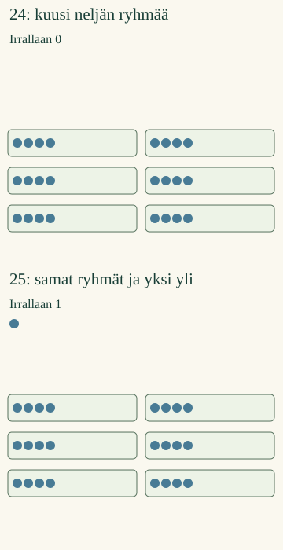

<link rel="stylesheet" href="lesson.css">


<section data-teaching-step="1" data-lesson-role="teaching-step">
<p class="lesson-intro"> Loikka pakkaa merkkejä neljän rasioihin. Jääkö yksikään yli?</p>
<h2>Jakautuuko tasan?</h2><p><strong>Tunnistan, milloin luku on jaollinen toisella luvulla.</strong></p>
<p>Ota 24 merkkiä. Tee neljän ryhmiä. Saat kuusi täyttä ryhmää, eikä mitään jää yli. <strong>24 on jaollinen luvulla 4.</strong></p>
<figure data-lesson-role="worked-example"><figcaption>24 = 6 · 4. Yksi lisää: 25 = 6 · 4 + 1.</figcaption></figure>
</section>


<section data-teaching-step="2" data-lesson-role="teaching-step">
<h3>Yksi yli muuttaa vastauksen</h3><p>25 merkistä saa kuusi täyttä neljän ryhmää. Yksi jää yli. Siksi <strong>25 ei ole jaollinen luvulla 4</strong>. Jakojäännös on 1.</p>
<p>Jakojäännös on jäljelle jäävä kokonainen määrä, kun uutta täyttä ryhmää ei enää saa. Se on pienempi kuin ryhmän koko. Jaollisessa jaossa jakojäännös on 0.</p>
</section>


<section data-teaching-step="3" data-lesson-role="teaching-step">
<section data-lesson-role="question"><h2>Mieti ennen kokeilua</h2><p>Voiko 24 olla jaollinen sekä 3:lla että 4:llä?</p><details data-lesson-role="answer"><summary>Katso perustelu</summary><p>Kyllä. Kolmen ryhmiä tulee kahdeksan ja neljän ryhmiä kuusi. Kummassakaan ei jää yli.</p></details></section>
</section>


<section data-teaching-step="4" data-lesson-role="teaching-step">
<h3>Sama ajatus paikoissa</h3><p>18 tuolia järjestetään kolmen riveihin. Saat kuusi täyttä riviä. 18 on jaollinen 3:lla. Jos tuoleja on 19, yksi jää yli: 19 = 6 · 3 + 1.</p>
</section>


<section data-teaching-step="5" data-lesson-role="teaching-step">
<div data-divis><p>Paperilla: piirrä 24 ja sitten 25 merkkiä neljän ryhmiin. Kirjoita kummankin jakojäännös ja päättele, jakautuuko määrä tasan.</p></div>
</section>


<section data-teaching-step="6" data-lesson-role="teaching-step">
<details data-lesson-role="hint"><summary>Apua: jakaminen toisesta suunnasta</summary><p>Voit myös jakaa 24 merkkiä tasan neljään rasiaan. Jokaiseen tulee kuusi eikä mitään jää yli. Jos merkkejä on 25 ja merkkejä ei pilkota, yksi jää yli. Sama jaollisuuden ehto toimii molemmissa jakamisen tavoissa.</p></details>
</section>


<section data-teaching-step="7" data-lesson-role="teaching-step">
<details data-lesson-role="teaching-step"><summary>Tutki viimeistä numeroa</summary><p>Kymmenen jakautuu tasan sekä kahden että viiden ryhmiin. Myös kaikki täydet kymmenet jakautuvat. Siksi viimeinen numero ratkaisee: 2:lla jaollisen viimeinen numero on 0, 2, 4, 6 tai 8; 5:llä jaollisen 0 tai 5; 10:llä jaollisen 0.</p><p>Esimerkiksi 30 on jaollinen kaikilla kolmella luvulla. Luokat voivat mennä päällekkäin. Tämä viimeisen numeron sääntö ei sellaisenaan toimi 3:lle: 12 ja 22 päättyvät samaan numeroon, mutta vain 12 on jaollinen 3:lla.</p></details>
</section>


<details data-lesson-role="teacher-note"><summary>Opettajalle ja ilman ruutua</summary><p>Vuosiluokat 3–6, concept/atomic. Pakollinen esitietoryhmä on OR: M-DIV-01 ositusjako tai M-DIV-02 sisältöjako. Molempia ei vaadita. Kertotaulujen täysi sujuvuus on vahva tuki, ei portti. Ylijäämä voi näkyä eri paikassa jakamisen tavasta riippuen; se ei katoa. Tässä käsitellään kokonaisia jakamattomia merkkejä ja positiivisia jakajia.</p><p>Offline: kokeilkaa 24/25 merkkiä ja neljän rasioita sekä neljään rasiaan jakamista. Säilyttäkää kaikki merkit. Kysykää, saako irrallisista vielä yhden täyden ryhmän. Apumallissa painike siirtää yhden kokonaisen ryhmän kerrallaan; se ei mittaa sujuvuutta. Valmiiksi annettu määrä ja rajatut vastaukset eivät osoita fyysistä jakamista, itsenäisyyttä tai pysyvää oppimista. Ei pisteitä tai oppijahistoriaa.</p></details>


<section data-teaching-step="8" data-lesson-role="teaching-step">
<p data-lesson-role="question"><strong>Lopuksi:</strong> mitä jakojäännös 0 kertoo jaollisuudesta?</p>
</section>


